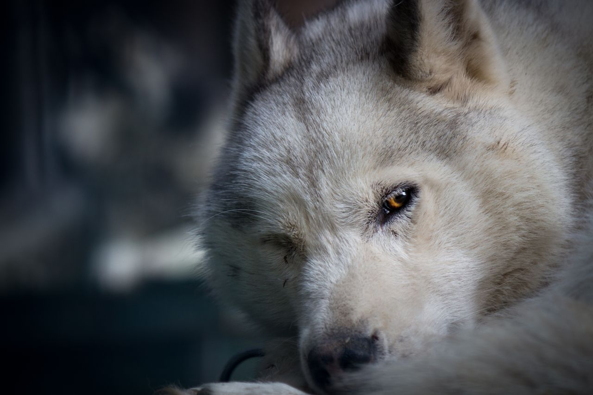
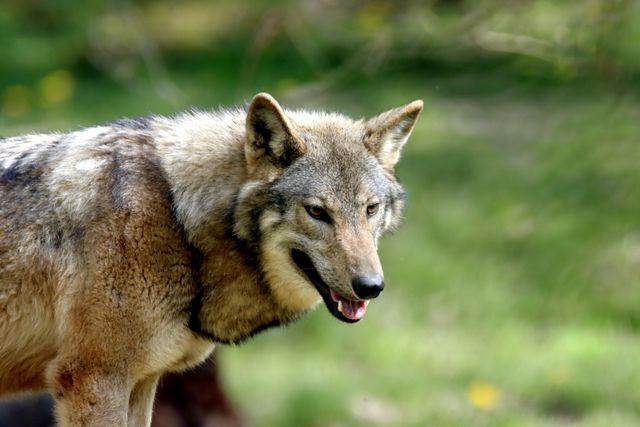
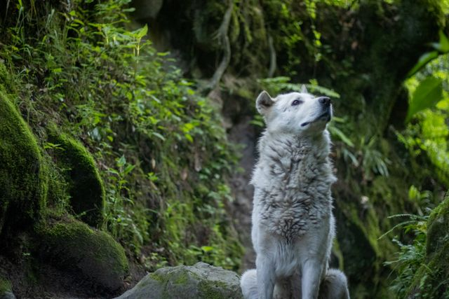
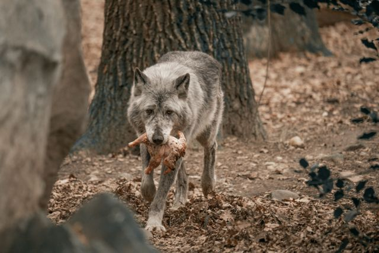
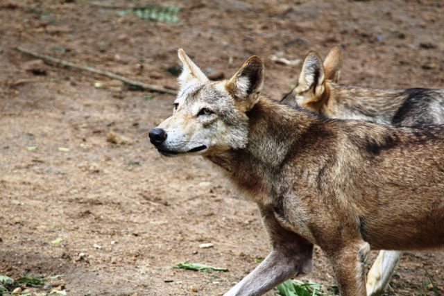
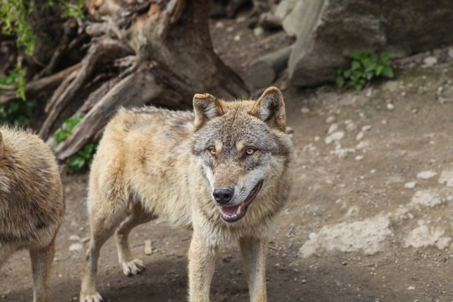
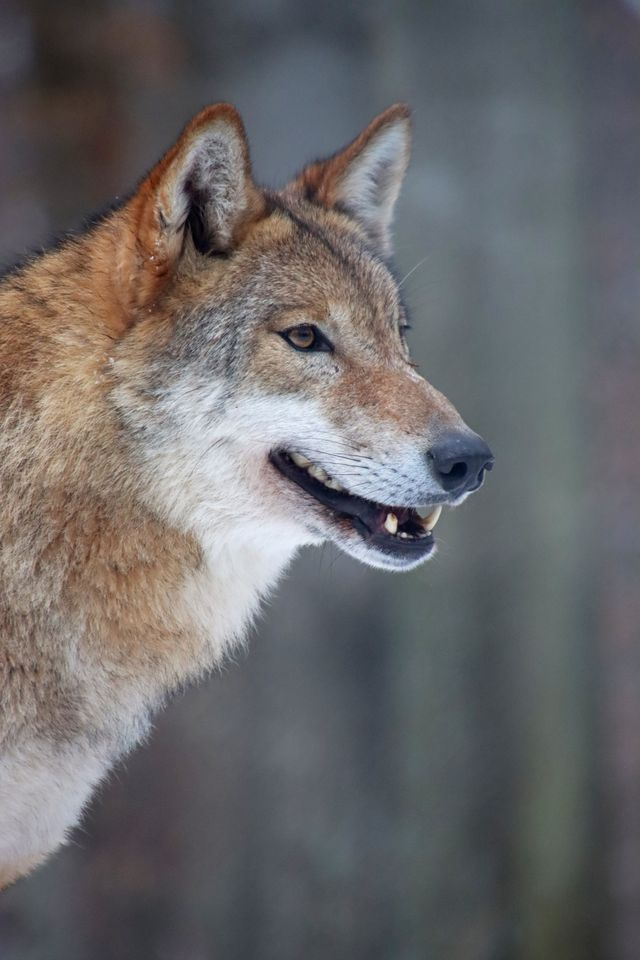

Photo Gallery


A wolf walking across a grassy field.

A pale wolf gazing upward among green ferns.

A wolf carrying food through the forest.

Two wolves standing close together.

A wolf standing on rocky ground, looking at the camera.

Close-up of a wolf's face in profile.